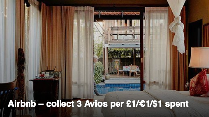

Maximizando suas milhas
com os gastos do dia-a-dia.
Este é um tópico que demanda muito planejamento e tempo, talvez a parte mais difÃcil de nossa estratégia já que os resultados vem gradualmente ao longo do tempo. Você consegue montar sua estratégia de acúmulo de milhas de forma eficiente, só é preciso se dedicar um pouco e estudar as possibilidades.
Mas vamos começar pelo básico de tudo.
O que são milhas?
Milhas são uma espécie de “pontos virtuais”, que as cias aéreas emitem e usam há décadas.
É um business gigante que movimenta bilhões por ano no mundo todo.
A ideia mais básica por trás das milhas, é criar um vÃnculo entre o cliente e a empresa, que te incentive a voltar consumir
novamente daquela mesma empresa.
Sabe aquela cartelinha de cafezinho, que a cada 10 carimbos você ganha um café grátis?
O conceito básico é o mesmo das milhas. A grande diferença é as milhas serem negociadas pelas empresas e poderem ser
transferidas entre empresas parceiras ou que pertente ao mesmo grupo, criando estÃmulos muito maiores e
um mercado gigantesco em volta disso.
Por que as cias negociam milhas?
Os principais motivos são:
- Criar uma fidelização do cliente para com a empresa.
- Quando você compra milhas, a empresa recebe o valor pago como um “adiantamento†pelas passagens que você vai emitir futuramente, e que podem nem serem emitidas, por isso, é possÃvel ter descontos na venda de milhas.
- Quando você compra uma passagem e paga com cartão de crédito, a empresa vai receber aquele valor semanas depois, às vezes até 60 dias depois, então não existe incentivo nenhum para a cia aérea te vender passagens em dinheiro.
- É possÃvel utilizar as milhas para fazer upgrades, comprar outros serviços e consumir durante o voo, por isso, é interessante para a empresa que você tenha milhas.
- Toda milha vendida é dinheiro que a cia aérea ganhou sem você ter consumido nada.
Preste muita atenção na validade das milhas, no geral elas podem valer entre 2 e 3 anos, mas especialmente as milhas promocionais podem tem a validade bem mais curta.
Em qual cia acumular milhas?
Embora se encontre muita informação online falando para acumular milhas em uma única cia aérea, NÃO faça isso. É muito importante entender as alianças aéreas, formadas por várias cias juntas, as parcerias e as possibilidades de transferência de milhas entre elas.
Se você mora na Europa principalmente, outro erro comum é querer focar apenas na principal cia aérea do seu paÃs.
Por exemplo, se você mora na Holanda 🇳🇱, a KLM é ótima, e tem rotas pro mundo inteiro, mas usando diversas ferramentas para acumular milhas, provavelmente você consegue promoções bem melhores, às vezes em classe Executiva, para voar com a Iberia saindo de Madri 🇪🇸, ou TAP saindo de Lisboa 🇵🇹, mais barato que o mesmo trecho de classe econômica pela KLM.
Estude e entenda bem as cias aéreas, suas alianças e parcerias, antes de focar tudo numa mesma empresa. Não coloque todos os ovos numa única cesta.
Como Acumular Milhas
Aqui é onde cada um precisa estudar as suas opções locais e montar sua estratégia conforme as opções disponÃveis.
Como mencionado, é importante saber em quais programas de pontos é mais vantajoso acumular as milhas,
para isso leia em detalhes sobre as alianças aéreas e parcerias.
As maneiras mais comuns para acúmulo de milhas são:
- Voando e recebendo milhas pelo trecho/voo
- Reservando hotel em redes que dão pontos/milhas
- Cartão de Crédito (sessão dedicada)
- Comprando online usando links/cupons dos programas de fidelidade
- Aluguel de carro em redes que dão pontos/milhas
- Abastecendo o carro em redes que dão pontos/milhas
- Programas de pontos e cashback de Supermercados, muito comum em vários paÃses
- Comprando milhas (dentro do limite teto)
- Transferências bonificadas
Embora isso seja repetido em outras sessões, nunca é demais ressaltar que quando for criar contas nas plataformas hoteleiras, locadoras de carros, etc, você precisa usar o MESMO NOME em todas as contas, muitas dessas plataformas só deixam transferir pontos entre contas com o mesmo nome/sobrenome.
Reservando Hotel
Os grandes grupos hoteleiros geralmente têm parcerias com várias cias aéreas, e você pode acumular milhas reservando hotéis através dos sites das cias aéreas, ou da rede de hoteleira.
Quase todos os programas de fidelidade, tem parceria com redes hoteleiras (exemplos na sessão abaixo). Elas também possuem programas de fidelidade próprios, onde você pode acumular pontos e converter para milhas e também podem ser transferidas com bônus para outras cias aéreas.
Não se esqueça de sempre usar o mesmo nome/sobrenome e email em todas as contas, para poder transferir os pontos entre elas com menor risco de eventuais problemas.
Para mais detalhes, veja a página sobre grupos hoteleiros.
Usando portais de reserva de Hotel
 Com certeza a maneira mais comum que todo mundo usa, são os grandes portais de reserva online como Booking e AirBnb.
A grande dica aqui é novamente a mesma que vale pra todo relacionado a pontos e milhas: nunca vá direito ao site do serviço que você quer usar!
Exemplo: por dentro do Executive Club da British, você acumula Avios usando o AirBnb, só precisa iniciar a sessão pelo site do Executive Club ao invés de ir direito ao AirBnb.
O mesmo vale para o portal Booking.com, muitos programas de fidelidade e cias aéreas tem parcerias com o Booking, você só precisa entrar no portal de viagem dos programas e utilizar o Booking por lá.
Pontos, Cashback e Lojas Online
 Existem diversas plataformas que geram pontos próprios, assim como as redes hoteleiras, ou cashbacks,
que podem ser convertidos para milhas, cada paÃs tem as suas opções, e geralmente os próprios
programas de fidelidade tem parcerias e lojas online para reservar hotéis, alugar carros, etc.
Existem diversas plataformas que geram pontos próprios, assim como as redes hoteleiras, ou cashbacks,
que podem ser convertidos para milhas, cada paÃs tem as suas opções, e geralmente os próprios
programas de fidelidade tem parcerias e lojas online para reservar hotéis, alugar carros, etc.
Em muitos paÃses isso acontece até com redes de supermercados, onde existem cartões de fidelidade
que geram pontos e dão descontos, e muitos deles tem parcerias com cias aéreas e os pontos podem
ser convertidos em milhas.
Verifique se você já não utiliza algum cartão de fidelidade de supermercado ou grande rede de
varejo, no seu paÃs.
Uma ferramenta extremamente importante de se usar são os links de parcerias, os links bonificados.
Você entra no site do seu programa de pontos, e através dele, será fornecido um link que te direciona
para outras lojas online, como a Amazon, por exemplo.
Efetuando a compra usando esses links, você ganha pontos/milhas diretamente, mais, os pontos/milhas gerados
pelo seu cartão de crédito, é uma pontuação dupla, e ao longo de 1 ou 2 anos, é possÃvel acumular
realmente muitos pontos com essa estratégia.
A dica principal é: nunca vá direito ao site do serviço que você quer usar!
Sempre utilize os portais dos programas de pontos ou cia aéreas, e pelos links de parceria você será direcionado
para o serviço que deseja.
Alguns exemplos de plataformas de pontos, fidelidade e compras online ao redor do mundo:
- 🇩🇪 Alemanha - Miles & More, Payback, TopCashback
- 🇦🇺 Austrália - Qantas, Everyday Rewards, Flybuys, TopCashback, Uber One
- 🇦🇹 Austria - Miles & More, Payback
- 🇧🇷 Brasil: Livelo, Esfera, Smiles
- 🇩🇰 Dinamarca - SAS EuroBonus
- 🇪🇸 Espanha - Iberia Plus
- 🇺🇸 EUA - TopCashback, Rakuten
- 🇫🇷 França - Shop For Miles (Flying Blue), TopCashback
- 🇫🇮 Finlândia - Finnair Plus
- 🇯🇵 Japão - TopCashback
- 🇮🇪 Irlanda - AerClub
- 🇮🇹 Itália - Payback
- 🇳🇱 Holanda - Shop For Miles (Flying Blue)
- 🇳🇴 Noruega - Finnair Plus
- 🇬🇧 Reino Unido - TopCashback
- 🇵🇱 Polônia - Payback
- 🇵🇹 Portugal - TAP Miles & Go
- 🇸🇪 Suécia - SAS EuroBonus
- 🇨🇠SuÃça - Miles & More
Dois exemplos de plataformas que operam em vários paÃses:
- Payback: 🇩🇪🇦🇹🇮🇹🇵🇱 - Gera pontos Payback que podem ser convertidos diretamente para milhas Miles & More, e tem promoções de transferência bonificada. [link de referência]
- TopCashback: 🇦🇺🇺🇸🇬🇧🇩🇪🇫🇷🇯🇵 - Gera cashback que podem ser transferidos como pontos Avios para o Executive Club da British Airways (apenas na versão britânica do TopCashback), e de lá serem usados para outras cias aéreas do grupo IAG como Iberia, Air Lingus, ou para cias parceiras como a Qatar Airways. Confira as opções de saque e transferência no seu paÃs. [link de referência]
O Payback oferece transferência automática de pontos para o programa Miles & More em alguns paÃses, NÃO ative essa opção, pois o Payback também costuma fazer promoções de transferências bonificas para o Miles & More, com bônus entre 20% e 30%, sempre algumas semanas depois que as transferências automáticas ocorrem.
Lembrando que quase todas cias aéreas, os programas de fidelidade, tem parcerias com lojas online ou suas próprias lojas, e que você pode efetuar compras bonificadas para gerar mais pontos/milhas.
Por favor, entre em contato usando os links no rodapé, para contribuir e listarmos lojas e plataformas de outros paÃses. 🙏